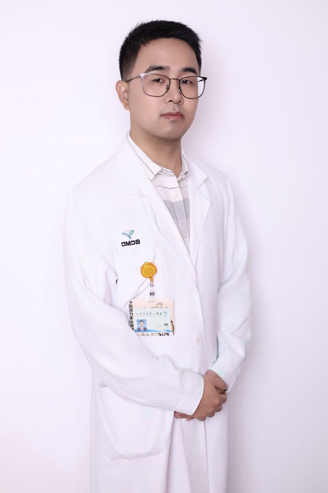

🦶
Pediatric Foot & Ankle
Clubfoot · Flatfoot · Hallux valgus · Complex pediatric foot deformity

Department of Orthopaedics
Shanghai Children's Medical Center
Shanghai Jiao Tong University School of Medicine
Pediatric Orthopaedics • Foot & Ankle • Lower Limb Deformity • Digital Orthopaedics • Surgical Innovation
I am an attending orthopaedic surgeon at Shanghai Children’s Medical Center, Shanghai Jiao Tong University School of Medicine. My clinical practice focuses on pediatric orthopaedics, with particular experience in developmental dysplasia of the hip, clubfoot correction, and minimally invasive treatment of pediatric fractures.
My academic interests include pediatric lower-limb reconstruction, growth preservation, deformity correction, quantitative imaging, digital orthopaedics, and clinically driven surgical innovation.
Clubfoot · Flatfoot · Hallux valgus · Complex pediatric foot deformity
Guided growth · Limb alignment · Osteotomy planning · Growth preservation
Developmental dysplasia of the hip · Hip reconstruction · Young hip disorders
Quantitative imaging · AI-assisted assessment · 3D planning · Gait analysis
3D-printed guides · Novel instruments · Prototyping · Clinical translation
Developing standardized weight-bearing imaging workflows for quantitative assessment of medial arch morphology and hindfoot alignment.
Exploring low-cost markerless motion analysis for children with lower-limb deformity and neuromuscular gait disorders.
Combining imaging-derived measurements, 3D planning, and practical surgical guides for deformity correction.
Designing and prototyping practical instruments for pediatric deformity correction, bone surgery, and intraoperative measurement.
Additional publications and current projects can be shared on request.
I welcome opportunities for international collaboration and academic exchange in pediatric orthopaedics, particularly in pediatric foot and ankle surgery, lower-limb deformity, gait analysis, digital orthopaedics, and surgical innovation.
I am also interested in short-term observerships and visiting scholar opportunities that may facilitate collaborative clinical research and technology development.
“Better care for every child through global collaboration.”